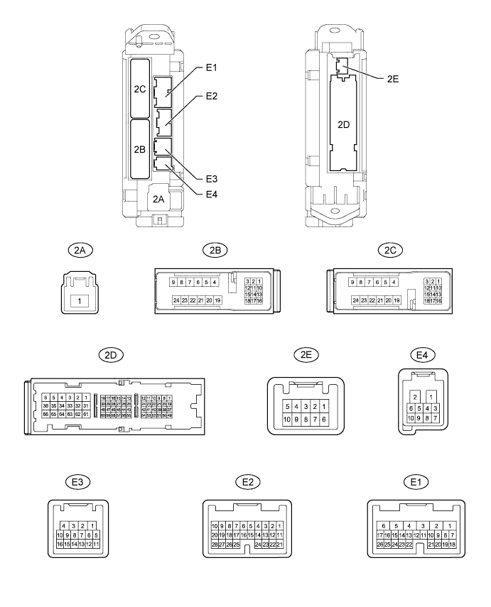
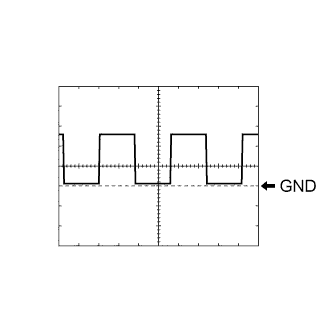
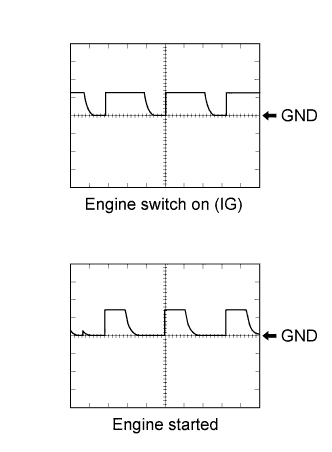
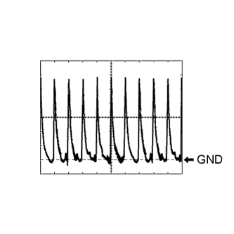
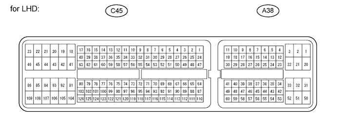
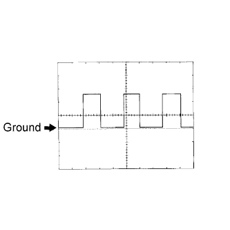
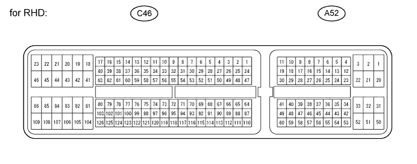

ENTRY AND START SYSTEM (for Start Function) > TERMINALS OF ECU |
| CHECK MAIN BODY ECU (COWL SIDE JUNCTION BLOCK LH) |

Disconnect the E1, E2 and 2D main body ECU connectors.
Measure the voltage and resistance according to the value(s) in the table below.
| Terminal No. (Symbol) | Wiring Color | Terminal Description | Condition | Specified Condition |
| E1-6 (AM1) - Body ground | W - Body ground | +B power supply | Always | 11 to 14 V |
| E2-1 (AM2) - Body ground | W - Body ground | +B power supply | Always | 11 to 14 V |
| E1-17 (SSW1) - Body ground | B - Body ground | Engine switch 1 input | Engine switch pushed | Below 1 Ω |
| E1-17 (SSW1) - Body ground | B - Body ground | Engine switch 1 input | Engine switch not pushed | 10 kΩ or higher |
| E1-16 (SSW2) - Body ground | B - Body ground | Engine switch 2 input | Engine switch pushed | Below 1 Ω |
| E1-16 (SSW2) - Body ground | B - Body ground | Engine switch 2 input | Engine switch not pushed | 10 kΩ or higher |
| 2D-62 (GND2) - Body ground | W-B - Body ground | Ground | Always | Below 1 Ω |
| 2D-20 (LIN) - Body ground | GR - Body ground | LIN line | Always | 10 kΩ or higher |
Reconnect the E1, E2 and 2D main body ECU connectors.
Measure the voltage according to the value(s) in the table below.
| Terminal No. (Symbol) | Wiring Color | Terminal Description | Condition | Specified Condition |
| E1-22 (ACCD) - 2D-62 (GND2) | P - W-B | ACC relay drive signal | Engine switch on (ACC) | 11 to 14 V |
| E1-22 (ACCD) - 2D-62 (GND2) | P - W-B | ACC relay drive signal | Engine switch off | Below 1 V |
| E1-3 (IG1D) - 2D-62 (GND2) | G - W-B | IG1 No. 3 relay drive signal | Engine switch on (IG) | 11 to 14 V |
| E1-3 (IG1D) - 2D-62 (GND2) | G - W-B | IG1 No. 3 relay drive signal | Engine switch on (ACC) | Below 1 V |
| E2-11 (IG2D) - 2D-62 (GND2) | B - W-B | Integration relay (IG2 relay) drive signal | Engine switch on (IG) | 11 to 14 V |
| E2-11 (IG2D) - 2D-62 (GND2) | B - W-B | Integration relay (IG2 relay) drive signal | Engine switch on (ACC) | Below 1 V |
| E1-19 (SLR+) - 2D-62 (GND2) | G - W-B | Steering lock power supply | Steering lock motor operating | Below 1 V |
| E1-19 (SLR+) - 2D-62 (GND2) | G - W-B | Steering lock power supply | Steering lock motor not operating | 11 to 14 V |
| E1-8 (STR) - 2D-62 (GND2) | L - W-B | Park/neutral position switch signal*1 Clutch pedal switch signal*2 | Engine switch on (IG), shift lever not in P or N → P or N*1 Engine switch on (IG), Clutch pedal switch released → Depressed*2 | Below 2 V → Pulse generation*3 |
| E1-18 (SLP) - 2D-62 (GND2) | SB - W-B | Steering lock actuator position signal | Steering lock locked | 11 to 14 V |
| E1-18 (SLP) - 2D-62 (GND2) | SB - W-B | Steering lock actuator position signal | Steering lock released | Below 1 V |
| E3-9 (SPD) - 2D-62 (GND2) | V - W-B | Speed signal from combination meter | Engine switch on (IG), driving wheel rotating slowly | Pulse generation (see waveform 1) |
| E3-8 (TACH) - 2D-62 (GND2) | W - W-B | Tachometer signal | Engine running | Pulse generation (see waveform 2) |
| E4-2 (P) - 2D-62 (GND2)*1 | L - W-B | Shift lock signal | Shift lever in P | Pulse generation (see waveform 3) |
| E4-2 (P) - 2D-62 (GND2)*1 | L - W-B | Shift lock signal | Shift lever not in P | Below 1 V |
| E4-4 (STSW) - 2D-62 (GND2) | R - W-B | Starter activation request signal | Brake pedal depressed, engine switch depressed*1 Clutch pedal depressed, engine switch depressed*2 | 11 to 14 V |
| E1-15 (INDS) - 2D-62 (GND2) | W - W-B | Vehicle condition signal | Brake pedal released with shift lever in P or N, engine switch off, on (ACC), or on (IG)*1 Clutch pedal released, engine switch off, on (ACC), or on (IG)*2 | 9 to 14 V |
| E1-14 (INDW) - 2D-62 (GND2) | W - W-B | Vehicle condition signal | Brake pedal released with shift lever in P or N, engine switch off, on (ACC), or on (IG)*1 Clutch pedal released, engine switch off, on (ACC), or on (IG)*2 | 9 to 14 V |
| E1-25 (SWIL) - 2D-62 (GND2) | R - W-B | Illumination signal | Light control switch tail or head | 11 to 14 V |
| 2B-22 (STP) - 2D-62 (GND2) | R - W-B | Stop light switch signal | Brake pedal depressed | 11 to 14 V |
| 2B-22 (STP) - 2D-62 (GND2) | R - W-B | Stop light switch signal | Brake pedal released | Below 1 V |
Using an oscilloscope, check the signal waveform of the ECU.
 |
Waveform 1
| Terminal No. (Symbol) | Tool Setting | Condition |
| E3-9 (SPD) - 2D-62 (GND2) | 5 V/DIV., 100 msec./DIV. | Driving at approx. 20 km/h (12 mph) |
 |
Waveform 2
| Terminal No. (Symbol) | Tool Setting | Condition |
| E3-8 (TACH) - 2D-62 (GND2) | 10 V/DIV., 10 msec./DIV. | Engine switch on (IG) or engine started |
 |
Waveform 3
| Terminal No. (Symbol) | Tool Setting | Condition |
| E4-2 (P) - 2D-62 (GND2) | 2 V/DIV., 20 msec./DIV. | Shift lever in P |
| CHECK CERTIFICATION ECU (SMART KEY ECU ASSEMBLY) |
Disconnect the E29 certification ECU (smart key ECU assembly) connector.
Measure the voltage and resistance according to the value(s) in the table below.
| Terminal No. (Symbol) | Wiring Color | Terminal Description | Condition | Specified Condition |
| E29-1 (+B) - Body ground | B - Body ground | +B power supply | Always | 11 to 14 V |
| E29-10 (LIN) - Body ground | GR - Body ground | LIN line | Always | 10 kΩ or higher |
| E29-17 (E) - Body ground | W-B - Body ground | Ground | Always | Below 1 Ω |
Reconnect the E29 certification ECU (smart key ECU assembly) connector.
Measure the voltage according to the value(s) in the table below.
| Terminal No. (Symbol) | Wiring Color | Terminal Description | Condition | Specified Condition |
| E29-18 (IG) - Body ground | B - Body ground | Ignition power supply | Engine switch on (IG) | 11 to 14 V |
| E29-18 (IG) - Body ground | B - Body ground | Ignition power supply | Engine switch off | Below 1 V |
| CHECK ECM |
for LHD:
Disconnect the A38 and C45 ECM connectors.

Measure the voltage and resistance according to the value(s) in the table below.
| Terminal No. (Symbol) | Wiring Color | Terminal Description | Condition | Specified Condition |
| A38-1 (BATT) - C45-81 (E1)*1 A38-20 (BATT) - C45-81 (E1)*2, *3 | L - BR | Battery (for measuring battery voltage and for ECM memory) | Always | 11 to 14 V |
| A38-3 (+B) - C45-81 (E1)*1 A38-2 (+B) - C45-81 (E1)*2, *3 | B - BR | Power source of ECM | Engine switch on (IG) | 11 to 14 V |
| A38-28 (IGSW) - C45-81 (E1) | B - BR | Engine switch signal | Always | 11 to 14 V |
| C45-81 (E1) - Body ground | BR - Body ground | Ground | Always | Below 1 Ω |
| C45-43 (E01) - Body ground*1 C45-22 (E01) - Body ground*2, *3 | W-B - Body ground | Ground | Always | Below 1 Ω |
| C45-42 (E02) - Body ground*1 C45-21 (E02) - Body ground*2, *3 | BR - Body ground | Ground | Always | Below 1 Ω |
| C45-46 (E03) - Body ground*1 C45-104 (E03) - Body ground*2 | W-B - Body ground | Ground | Always | Below 1 Ω |
| C45-23 (E04) - Body ground | W-B - Body ground | Ground | Always | Below 1 Ω |
| C45-21 (E05) - Body ground*1 C45-46 (E05) - Body ground*2 | W-B - Body ground | Ground | Always | Below 1 Ω |
Reconnect the ECM connectors.
Measure the voltage according to the value(s) in the table below.
| Terminal No. (Symbol) | Wiring Color | Terminal Description | Condition | Specified Condition |
| A38-46 (STA) - C45-81 (E1)*1 A38-48 (STA) - C45-81 (E1)*2, *3 | R-B - BR | ST relay operation signal | Cranking | 5.5 V or more |
| A38-14 (STSW) - C45-81 (E1) | R - BR | Starter activation request signal | Brake pedal depressed, engine switch on (IG) | Output voltage at terminal AM1 or AM2 is -2 V or more |
| A38-41 (ACCR) - C45-81 (E1)*1 A38-13 (ACCR) - C45-81 (E1)*2, *3 | L-Y - BR | ACC relay cut signal (output) | Engine switch on (IG) → Cranking | 11 to 14 V → Below 1 V |
| A38-15 (TACH) - C45-81 (E1) | W-G - BR | Engine speed signal (output) | Idling | Pulse generation (see waveform 1) |
| C45-16 (STAR) - C45-81 (E1)*1 C45-63 (STAR) - C45-81 (E1)*2 C45-51 (STAR) - C45-81 (E1)*3 | L - BR | ST relay drive signal | Cranking | 11 to 14 V |
 |
Using an oscilloscope, check the signal waveform of the ECM.
| Terminal No. (Symbol) | Tool Setting | Condition |
| A38-15 (TACH) - C45-81 (E1) | 5 V/DIV., 10 ms./DIV. | Engine idling |
for RHD:
Disconnect the A52 and C46 ECM connectors.

Measure the voltage and resistance according to the value(s) in the table below.
| Terminal No. (Symbol) | Wiring Color | Terminal Description | Condition | Specified Condition |
| A52-1 (BATT) - C46-81 (E1)*1 A52-20 (BATT) - C46-81 (E1)*2, *3 | L - BR | Battery (for measuring battery voltage and for ECM memory) | Always | 11 to 14 V |
| A52-3 (+B) - C46-81 (E1)*1 A52-2 (+B) - C46-81 (E1)*2, *3 | B - BR | Power source of ECM | Engine switch on (IG) | 11 to 14 V |
| A52-28 (IGSW) - C46-81 (E1) | B - BR | Engine switch signal | Always | 11 to 14 V |
| C46-81 (E1) - Body ground | BR - Body ground | Ground | Always | Below 1 Ω |
| C46-43 (E01) - Body ground*1 C46-22 (E01) - Body ground*2, *3 | W-B - Body ground | Ground | Always | Below 1 Ω |
| C46-42 (E02) - Body ground*1 C46-21 (E02) - Body ground*2, *3 | BR - Body ground | Ground | Always | Below 1 Ω |
| C46-46 (E03) - Body ground*1 C46-104 (E03) - Body ground*2 | W-B - Body ground | Ground | Always | Below 1 Ω |
| C46-23 (E04) - Body ground | W-B - Body ground | Ground | Always | Below 1 Ω |
| C46-21 (E05) - Body ground*1 C46-46 (E05) - Body ground*2 | W-B - Body ground | Ground | Always | Below 1 Ω |
Reconnect the ECM connectors.
Measure the voltage according to the value(s) in the table below.
| Terminal No. (Symbol) | Wiring Color | Terminal Description | Condition | Specified Condition |
| A52-46 (STA) - C46-81 (E1)*1 A52-48 (STA) - C46-81 (E1)*2, *3 | R-B - BR | ST relay operation signal | Cranking | 5.5 V or more |
| A52-14 (STSW) - C46-81 (E1) | R - BR | Starter activation request signal | Brake pedal depressed, engine switch on (IG) | Output voltage at terminal AM1 or AM2 is -2 V or more |
| A52-41 (ACCR) - C46-81 (E1)*1 A52-13 (ACCR) - C46-81 (E1)*2, *3 | L-Y - BR | ACC relay cut signal (output) | Engine switch on (IG) → Cranking | 11 to 14 V → Below 1 V |
| A52-15 (TACH) - C46-81 (E1) | W-G - BR | Engine speed signal (output) | Idling | Pulse generation (see waveform 1) |
| C46-16 (STAR) - C46-81 (E1)*1 C46-63 (STAR) - C46-81 (E1)*2 C46-51 (STAR) - C46-81 (E1)*3 | L - BR | ST relay drive signal | Cranking | 11 to 14 V |
Using an oscilloscope, check the signal waveform of the ECM.
| Terminal No. (Symbol) | Tool Setting | Condition |
| A52-15 (TACH) - C46-81 (E1) | 5 V/DIV., 10 ms./DIV. | Engine idling |
| CHECK STEERING LOCK ECU |
Disconnect the E26 steering lock ECU connector.
Measure the voltage and resistance according to the value(s) in the table below.
| Terminal No. (Symbol) | Wiring Color | Terminal Description | Condition | Specified Condition |
| E26-7 (B) - Body ground | R - Body ground | +B power supply | Always | 11 to 14 V |
| E26-6 (IG2) - Body ground | B - Body ground | Ignition power supply | Engine switch on (IG) | 11 to 14 V |
| E26-6 (IG2) - Body ground | B - Body ground | Ignition power supply | Engine switch off | Below 1 V |
| E26-1 (GND) - Body ground | W-B - Body ground | Ground | Always | Below 1 Ω |
| E26-2 (SGND) - Body ground | BR - Body ground | Ground | Always | Below 1 Ω |
Reconnect the E26 steering lock ECU connector.
Measure the voltage according to the value(s) in the table below.
| Terminal No. (Symbol) | Wiring Color | Terminal Description | Condition | Specified Condition |
| E26-4 (SLP1) - E26-1 (GND) | SB - W-B | Steering lock actuator position signal | Steering locked | 11 to 14 V |
| E26-4 (SLP1) - E26-1 (GND) | SB - W-B | Steering lock actuator position signal | Steering released | Below 1 V |